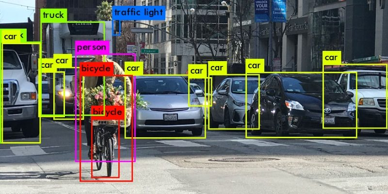
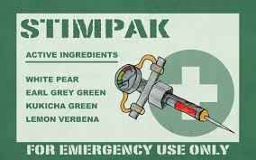

James Faber
Software Engineer. Dream Innovator.
About Me
Recently graduated from Valdosta State University with a B.S. in Computer Information Systems. My strong suit's are mainly Web Development, Full Stack, and Java (GUI) engineering. However, if given the opportunity, each day I will be committed to learning and developing new skills all while gaining experience. While I do consider myself to be a self-sufficient innovative thinker, I also flourish when I am placed in a team to collaborate with. I have hands-on experience using agile development methods, and I'm a firm believer that teamwork makes the dream work. I love the challenge of building an application that is tailored to user-specific needs and goals, all while keeping the user's interface and overall experience as seamless and user friendly as possible.
Portfolio
| OCUFLY | |
|---|---|
|  |
OCUFLY is image recognition software used by first responders to identify potentially dangerous situations via a drone camera. It provides valuable intel to EMT, police, and firefighters when they respond to dangerous calls. The software features simple flight controls on a GUI as well as the WASD keys to fly forward, backward, left, and right. The video being taken from the drone is uploaded when the user takes a picture. The picture is analyzed using open-source software, a list of the objects that were found are created analyzed updates to the GUI, then the picture is returned with the boxes around the object. |
| Doc-Clock | |
|---|---|
|  |
Doc-Clock is software created for use at doctors offices. It was a GUI created using Java and Java Swing. It allows users to create new patients, update existing ones, and retrieve a specified patient's information. Doctors are also able to be added/updated into the system. Users are able to create/update/delete appointments for patients. For every appointment another charge is added to the corresponding patient and added to their bill. |